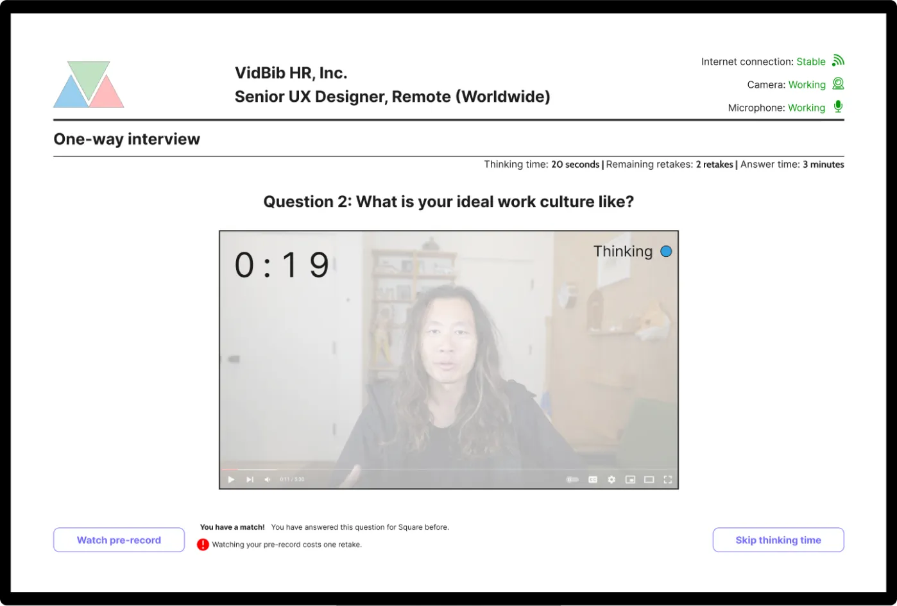

Overview
Product introduction
Scope — Solo, conceptual project
Platforms — Web platform
Timeframe — February 2022 to March 2022
Links — Figma prototype
Problem statement
One of the worst inefficiencies in the world is hiring processes that end with candidates' rejection: Companies use very valuable resources, which they get zero return on investment, and most of the time, candidates get no feedback and spend their time in very repetitive interviews.
Case in point: Even for positions in which the candidate was under-experienced clearly as a day, no feedback or no specific reason for rejection is presented.
Solution
Introducing external evaluators, a new role to the standard hiring equation: They evaluate job seekers' application packages and create extensive reports on them. These reports are shared with job seekers; thus they finally get feedback that they have been looking for for a long time and can be shared with the hiring responsible in the companies that are interested in the job seeker in return for financial compensation.
Furthermore, companies that evaluated a candidate and spent valuable resources in the process can assume the role of external evaluators, and monetize their own evaluation reports, which enable them to get a return on their investment.
Last but not least, any company purchasing such reports can significantly reduce the time and resources they spend on hiring processes.
Research
Preliminary user interviews
To understand the problems job seekers face before, during, and after the hiring processes they go through, I interviewed two people who were actively looking for a job and had interviewed within the last thirty days.
Both stated that:
- 1Most interviews they participated in were highly repetitive.
- 2They barely get feedback from companies they are rejected from.
- 3They would love to get feedback.
- 4They believe such feedback would help them to do much better in future interviews.
Questionnaires
To reach a broader population to verify these statements, see what other problems job seekers face, and understand the landscape better, I decided to conduct user questionnaires.
One questionnaire for juniors and active job seekers with less than three years of experience and another for seniors with hiring responsibilities with at least three years of experience were prepared. In total, 34 questions were asked, and 9 individuals participated.
Key learnings from questionnaires
- 1Job seekers truly care about feedback on their application packages and interviews.
- 2Some job seekers find it tedious to record long answers to one-way interview questions.
- 3A very high percentage of participants (85.7%) prefers using their computers for one-way interviews.
- 4Job seekers prefer to tailor their application packages per company as different companies value different things.
- 5Most seniors with hiring responsibilities would provide feedback if they had enough resources and time.
- 6Job seekers and hiring responsible have a much higher preference for one-way interviews.
Eureka!
Back to the whiteboard, I decided to go over four key points I learned by then:
- 1There is a market (i.e., supply and demand) for career consultancy services.
- 2Seniors and companies would provide feedback if they had enough resources or had been incentivized strongly.
- 3Job seekers love feedback on their application packages.
- 4A hiring process that ends with the rejection of a candidate to whom no feedback is provided is extremely inefficient.
During a brainstorming session, I noticed that a new role, “external evaluator”, could be introduced to the standard hiring equation between job seekers and companies, immensely improving the current hiring practices.

An external evaluator would provide extensive feedback on a job seeker's application package and get financially compensated for their time and effort. A job seeker would get extensive feedback, by allowing the external evaluator to share and monetize the extensive report they create, and companies would be able to purchase these reports, significantly reducing the resources they spend on job candidates, and/or sell their own reports on candidates they had rejected.
Most importantly, any person can assume any combination of these three roles under certain circumstances.
As an outcome of this new hiring process, job seekers' interviews become less repetitive, they get more feedback, hand-selected pioneers of their fields can provide feedback to job seekers and monetize their efforts, and companies finally have a way to “recycle” their efforts and reports on rejected candidates.
Usability test
After I completed the first iteration of VidBib’s prototype, it was time to test it with some real users. Yet, in addition to testing its usability, I had another motivation: To see how fast users learn to navigate through the website.
Even though I had done quite a good job with its information architecture, some power users would be switching between three roles constantly and very swiftly, thus how intuitive they find navigating through the product was very important.
With these two goals in my mind, I conducted an online unmoderated usability test with four tasks. All users were shortly briefed about VidBib before they started their tests, and as any task would start at the hiring responsible dashboard, instead of the product homepage where they could read about the roles, and the business proposition VidBib presents, etc., they would know very little about roles. While this is not clearly ideal for first-time users, this was intended to observe how fast they learn to navigate through the website, even when they have minimal information.
In fact, the two tasks, Task 1 and Task 3 were almost identical in terms of navigation, and to ensure they are not sequential, the longest task of this usability task was put between them. Any decrease in their average duration to complete those two tasks and any increase in their average scores would imply that VidBib's navigation is truly intuitive and very easy to learn through.
| Task |
Avg. Duration |
Avg. Score |
| Find out a hiring responsible's score on your answer as a job seeker |
140.6 secs. |
2.50/5.00 |
| Review an interview as a hiring responsible |
301.0 seconds |
3.50/5.00 |
| Find out an external evaluator's score on your answer as a job seeker |
108.6 seconds |
4.00/5.00 |
| Find out a company's deadline and contact them as an external evaluator |
16.1 seconds |
4.25/5.00 |
Key learnings from the usability test
- 1First-time users have some trouble navigating between different roles.
- 2Some test participants completed their tasks following indirect paths.
- 3Users find VidBib's navigation intuitive, and easy to learn.
- 4The average duration to complete the provided task has dropped from Task 1's 140.6 seconds to Task 3's 108 seconds: A 23% decrease. The average score has increased from Task 1's 2.50/5.00 to Task's 4.00/5.00 as well: A 60% increase.
Primary features
Easy-to-use one-way interview platform
Companies and candidates can use VidBib as a one-way interview platform. Pre-answers enable candidates to create their own pages, as below, review their answers, and share them with external evaluators, and companies to review those answers and write (and share) their comments on them.
Use your pre-recorded answers

If the candidate has answered an interview question in the past, they are allowed to take a look at their pre-record, and if they prefer, they can use them for their ongoing interview.
A library for your answers
If the candidate has answered an interview question in the past, they are allowed to take a look at their pre-record, and if they prefer, they can use them for their ongoing interview.
A page to display your best
Job seekers can share introduction videos, and "pre-answers" to interview questions publicly on their personal pages. Sharing those pages with the hiring responsible significantly reduces the time spend on pre-screening calls, or even interviews.
Only the best that matches your skills
External evaluators can see the external evaluation ads that match their skill sets, not wasting time on unfit job listings.